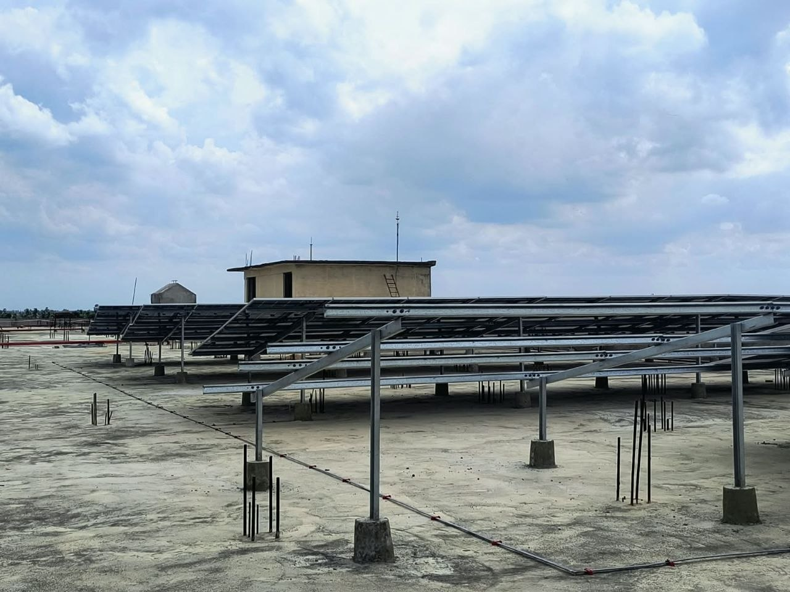
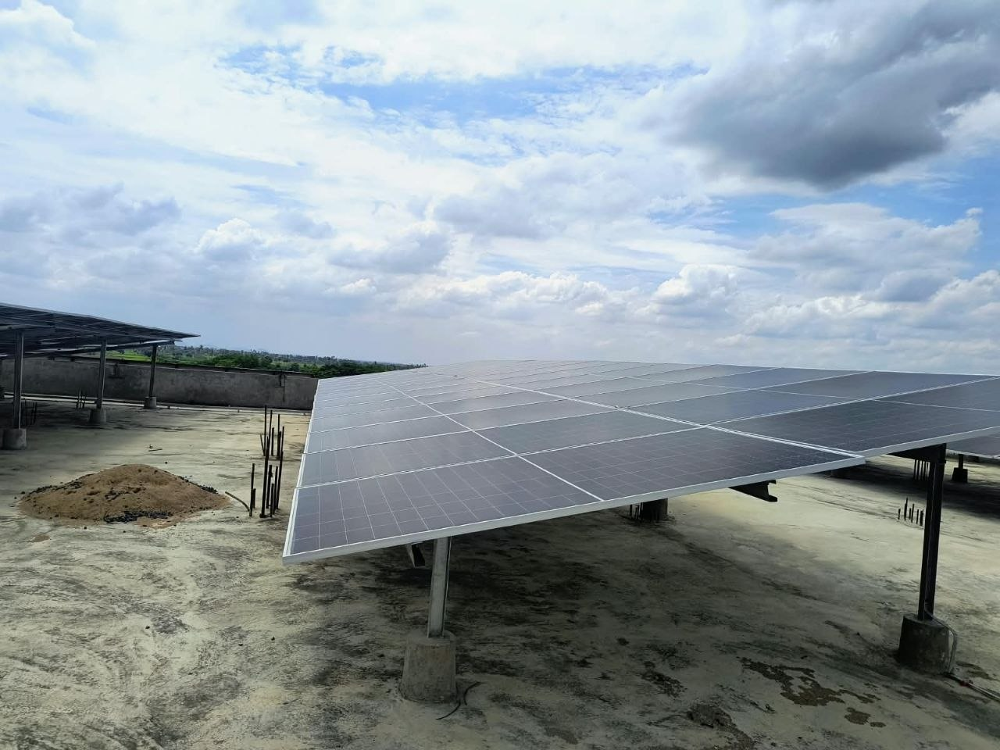
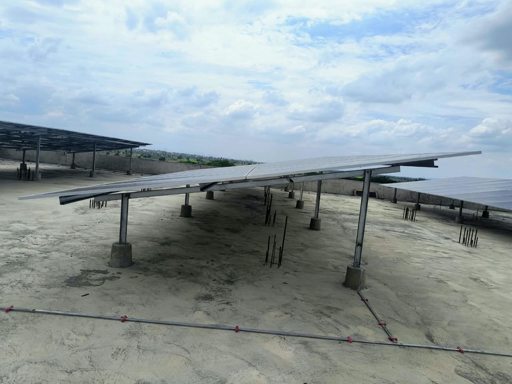

Ground accountability
One local team owns coordination, site decisions and delivery.
Commercial, industrial and residential solar delivered with local accountability, disciplined engineering and complete DISCOM liaisoning.
We combine local presence with an engineering-first process that keeps commercial solar projects moving from survey to commissioning.
One local team owns coordination, site decisions and delivery.
Structures, foundations, purlins and electrical interfaces are planned for real conditions.
Net-metering paperwork and liaisoning are managed as part of execution.
Turnkey civil, structural and electrical subcontract execution for C&I assets.
Elevated GI framing, purlins, anchor fasteners and wind-load-ready foundations.
APCPDCL / APEPDCL coordination and net-metering process support.
Local inspections, fault response and practical asset accountability after handover.
From civil foundations to elevated GI framing, every interface is treated as an execution detail. We focus on wind-load design, purlins, anchor fasteners and salt-spray resilience.
Discuss Your Site

Commercial & Industrial Rooftop · Guntur District
Elevated GI framing · Completed
Grid-Tied Rooftop · West Godavari District
Residential execution · CompletedRooftop Array · West Godavari District
Turnkey solar EPC · CompletedSolar performance depends on what happens after commissioning. GC Solar keeps local accountability close to the site.
EAST GODAVARI
WEST GODAVARI
KAKINADA
KONASEEMA
GUNTUR / TENALI
Share the location, capacity and current project stage. We will respond with the right next step.
WhatsApp the Team